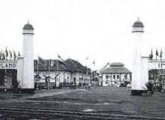
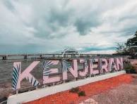

Sejarah

Kata Surabaya berasal dari kata sura dan baya yang memiliki arti berani dan bahaya,
sehingga diartikan sebagai berani menghadapi bahaya Legenda yang diceritakan oleh
orang-orang tua di Surabaya mengatakan bahwa nama Surabaya diambil dari sebuah
pertarungan antara ikan sura (hiu) dan baya (buaya) yang menjadi simbol kota Surabaya.
Berdasarkan filosofi Jawa, kata Surabaya juga berasal dari kalimat Sura ing Baya yang memiliki arti
berani menghadapi bahaya. Sura adalah ikan hiu dan Baya adalah buaya. Sura ing Baya artinya berani
menghadapi bahaya yang datang. Pertarungan antara hiu dan buaya tersebut menjadi simbol Kota
Surabaya sebagai Kota Pahlawan yang berani.
Geografis

Kota Surabaya terletak di pesisir utara Pulau Jawa, sehingga bentuk morfologi wilayahnya merupakan
dataran rendah dan pesisir. Secara geografis kota ini terletak di tepi Selat Madura dan Laut Jawa
serta berada pada ketinggian ±2 m di atas permukaan laut, dengan titik tertinggi berada di sebelah
selatan dengan ketinggian 45 meter di atas permukaan laut dan sebelah utara merupakankawasan pantai dengan
ketinggian 0-5 meter di atas permukaan laut.
Kota Surabaya dialiri dua sungai utama, yaitu Sungai Kalimas dan Sungai Brantas beserta anak-anak
sungainya yang pada umumnya mengalir ke arah Selat Madura dan bermuara di Laut Jawa. Dengan kondisi
yang demikian, Surabaya utara sangat rentan terhadap masalah rob dan banjir terutama pada musim hujan.
Wisata
Sejak dibukanya Jembatan Suramadu dan Jalan Tol Trans Jawa, kota Surabaya telah menjadi tujuan utama
dalam menikmati liburan akhir pekan terutama dari masyarakat yang berasal dari daerah sekitarnya. Selain
menjadi kota pahlawan dan kota bisnis, kota Surabaya juga dikenal dengan sejumlah besar bangunan lama
berarsitektur peninggalan Belanda seperti Hotel Majapahit dan Jembatan Merah.
Kenjeran Park Surabaya

Berada di jalur pesisir Surabaya, Kenjeran Park menjadi objek wisata yang tidak pernah sepi pengunjung.
Selain karena letaknya strategis, kawasan ini juga menghadirkan nuansa wisata khas pantai modern. Semua
itu diterapkan dalam bentuk spot swafoto Instagramable.
Monumen Kapal Selam

Memiliki koleksi kapal selam asli, antara lain, KRI Pasopati 410 yang merupakan peninggalan sejarah. Monumen
ini adalah jenis kapal selam terbesar yang pernah dimiliki Indonesia. Benda ini diletakkan di tepi Sungai
Kalimas sehingga saat teropong digunakan, wisatawan bisa masuk ke dalam. Monumen Kapal Selam boleh
dikunjungi
oleh siapapun, tanpa tiket mahal. Namun, bagi yang ingin menggunakan fasilitas edukasi, wajib mendaftarkan
diri. Untuk instansi atau lembaga pendidikan, diberikan jadwal hari Selasa sampai Jumat. Sementara itu,
kunjungan individu dibuka setiap hari Sabtu.